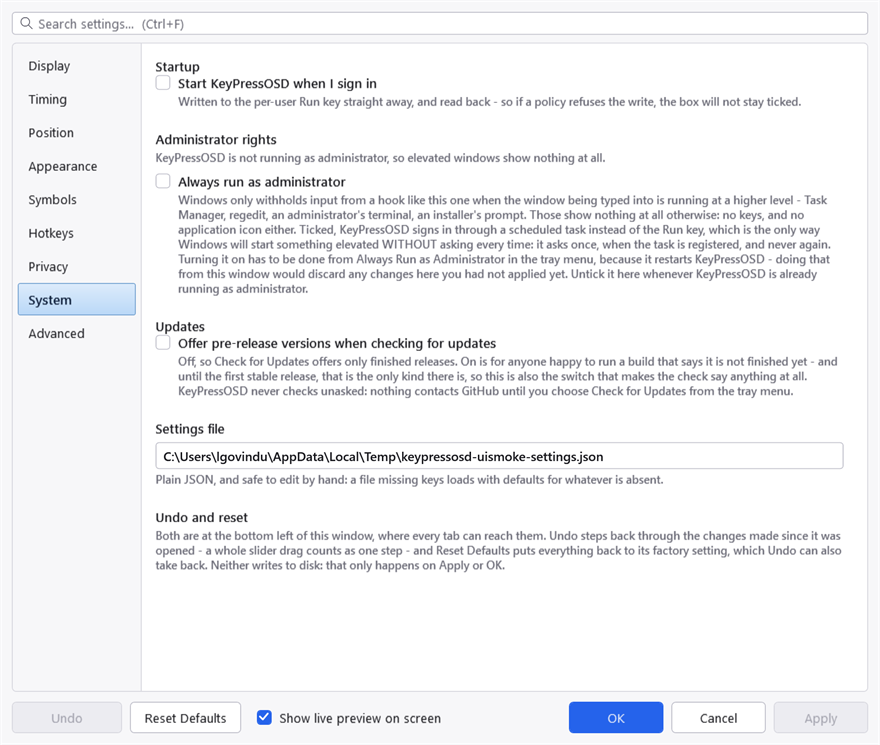
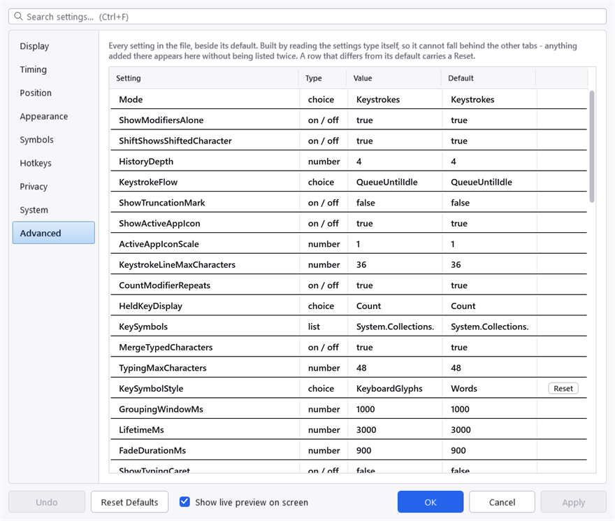
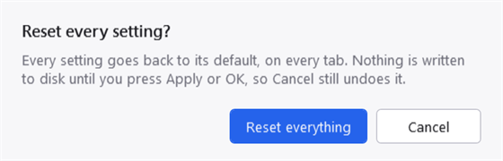

The settings file
One file, KeyPressOSD.json, kept beside the executable. The System tab shows its full path.

The System tab. The path is shown rather than merely described because the file lives beside the executable, and where that is depends on how the application was installed.
It is plain JSON and safe to edit by hand. A file missing keys loads with the defaults for whatever is absent, so you can delete anything you have not deliberately changed — and a brand-new setting added by a later version takes its default rather than breaking the file.
When it is written
Only when you press Apply or OK in the settings window, or when you use a tray toggle.
Every change you make in the settings window is applied to the running display immediately, so you can see what it does — but nothing reaches the file until you commit it. Cancel puts the settings back as they were.
The Advanced tab
Every setting in the file, with its current value beside its default, and a Reset on each row that differs.

The Advanced tab. It is generated from the settings themselves rather than written out by hand, so a setting added by a later version appears here without anyone having to remember to list it.
The list is built by reading the settings type itself rather than being written out by hand, so it cannot fall behind the other tabs: anything added there appears here without being listed twice.
It is read-only. The other tabs are the editors; what this page adds is visibility — what is set, what the default was, and which of the two you are looking at.
Undo and Reset Defaults
Both are at the bottom left of the settings window, where every tab can reach them.
Undo steps back through the changes made since the window was opened. A whole slider drag counts as one step, so undoing a drag returns you to where it began rather than one pixel back.
Reset Defaults puts every setting on every tab back to its factory value. Undo takes that back too. Neither writes to disk: that only happens on Apply or OK.

Reset asks first. The dialogue is drawn by this application rather than by Windows, which is why it follows the theme — a system message box cannot be styled at all, and arrives in Windows' own chrome whatever palette you have chosen.
Run at Startup is not reset, and neither is Always ask to run as administrator. Both live in the registry rather than in this file, and resetting a display preference should not silently unregister the application from starting with Windows or change whether it asks for administrator rights.
Editing it by hand
Worth knowing before you do:
- A value out of range is clamped, not rejected. A font size of 0 would produce an invisible display and 5000 a panel larger than the screen, so both are pulled back to something usable.
- A colour that will not parse falls back to a sensible one rather than failing to start. An invisible display gives you nothing to work back from.
- A deployed settings file outranks a changed default. If you are building from source and wondering why a default you edited has no effect, this is almost always why — the file already has a value for it.
A few defaults that look wrong and are not
Each of these has been chosen deliberately, and each is the kind of thing a well-meaning change reverses.
- Modifiers show on their own. Filtering them looks tidier and is less useful in a screencast.
- Keystrokes flow rather than being counted. A count of keystrokes is a poor guide to how wide the panel gets. See Showing keystrokes.
- The typing caret is off. It was on, and a bar blinking in the corner of the screen long after the text stopped changing is a distraction.
- The truncation ellipsis is off. With one key on screen at a time it would be permanent and would say nothing.
- The theme does not colour the overlay. The overlay sits over other people's windows; its colours are yours to set, with their own opacity.
- Key caps are light with dark text while the body text is light. Two foreground colours, not one — a cap is a light shape on a dark panel, so its text has to run the other way.
Project on GitHub · MIT licence ·
This manual is generated from docs/manual.